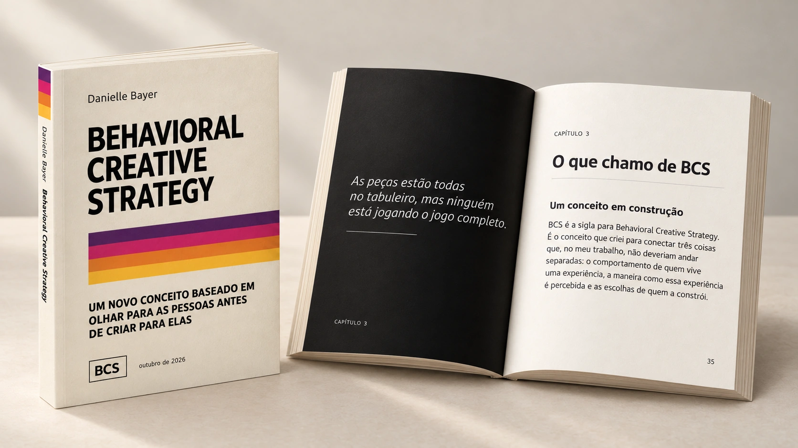

DANIELLE BAYER · LIVRO DIGITAL
Enquanto você
copia o que
não entende…
vai continuar produzindo muito
e convertendo pouco.
Um livro sobre entender as pessoas antes de criar para elas. E sobre o que acontece quando comportamento, criação e experiência começam a conversar.
Behavioral Creative Strategy · por Danielle Bayer

01 / ANTES DE CRIAR
A peça ficou bonita.
Mas fez sentido
para alguém?
Você escolhe a referência, ajusta a imagem, escreve o texto. Entrega. Publica. E, às vezes, continua sem saber por que aquilo funcionou — ou por que não funcionou.
O BCS começa uma etapa antes: na pessoa que vai encontrar o que você criou. O que ela precisa entender? O que espera? O que vai acontecer depois?
“As peças estão todas no tabuleiro, mas ninguém está jogando o jogo completo.”
TRECHO DO CAPÍTULO 3
02 / O CONCEITO
Olhar para as pessoas antes de criar para elas.Três olhares.
Uma conversa inteira.
BCS é a sigla para Behavioral Creative Strategy. É um novo conceito baseado em olhar para as pessoas antes de criar para elas, aproximando o comportamento das pessoas, a forma como uma experiência é percebida e as decisões de quem a constrói.
Quem vai encontrar aquilo?
O que essa pessoa procura?
Antes de decidir o que criar, tento entender a situação. Quem vai encontrar aquilo? O que essa pessoa já sabe? O que procura? Que perguntas faz? Onde fica confusa?
UM OLHAR DO LIVRO · CAPÍTULO 3
03 / A LEITURA
Uma ideia para acompanhar as suas próximas escolhas.LIVRO DIGITAL · IMAGEM ILUSTRATIVA
Um novo olhar.
No seu
próprio ritmo.
Um livro digital que aproxima histórias, perguntas e exemplos para ajudar você a perceber o que acontece antes, durante e depois de uma criação.
Uma leitura para acompanhar suas decisões no trabalho com mensagens, marcas, produtos e experiências.
- 01
Conheça o ponto de partida
Leia os trechos dos capítulos 1, 2 e 3 e descubra como as experiências de Danielle deram forma ao BCS.
- 02
Leia no seu ritmo
182 páginas, 13 capítulos e 2 apêndices em PDF, para ler no seu dispositivo.
- 03
Leve as perguntas para o trabalho
Observe as pessoas, reveja suas escolhas e aproxime a intenção de quem cria da experiência de quem encontra.
04 / DENTRO DO LIVRO
Da história pessoal às escolhas de quem cria.Uma trajetória.
Muitas peças que se juntam.
Administração, a Lua, uma câmera, pesquisa, audiovisual, UX e performance. O BCS nasceu quando esses caminhos começaram a conversar.
05 / PARA QUEM ESTÁ DO OUTRO LADO
Se você cria
para pessoas,
essa pergunta
é sua também.
Para quem trabalha com design, texto, vídeo ou marketing e quer explicar as escolhas por trás de uma entrega.
Para quem precisa fazer a promessa de uma marca conversar com a experiência que o cliente realmente vive.
Para quem desenha páginas, produtos, serviços ou espaços e quer compreender o caminho inteiro de uma pessoa.
07 / A EDIÇÃO DIGITAL BCS
Um livro para
mudar o começo
do seu processo.
Antes da próxima referência.
Antes da próxima campanha.
Antes de perguntar “o que eu vou criar?”.
Que pessoa você está
tentando compreender?
LIVRO DIGITAL
Behavioral
Creative Strategy
por Danielle Bayer
- Livro digital em PDF · 182 páginas
- 13 capítulos + 2 apêndices
- Histórias, reflexões e exemplos práticos
- Comportamento, percepção e estratégia
- Leitura no seu dispositivo, no seu ritmo
Compra pela Kiwify.
08 / SEM REBOBINAR DÚVIDAS
Antes de
começar a leitura.
O BCS fala só sobre anúncios?
Não. O livro passa por anúncios, marcas, páginas, produtos, eventos e experiências. A pergunta comum é o que cada escolha ajuda alguém a perceber, entender e fazer.
Qual é o formato desta edição?
Esta edição é um livro digital em PDF, com 182 páginas, 13 capítulos e 2 apêndices. Você pode ler em um computador, tablet ou celular com um leitor de PDF. Os mockups da página são imagens ilustrativas do conteúdo digital.
É um livro de fórmulas prontas?
Danielle apresenta o BCS como um conceito, com histórias, perguntas e exemplos. O propósito é ajudar você a observar e explicar as escolhas, sem prometer um resultado garantido para toda situação.
Posso conhecer o texto antes de comprar?
Sim. Use “Ler um trecho” para conhecer passagens dos capítulos 1, 2 e 3. Os títulos dos demais capítulos também estão disponíveis para você conhecer a estrutura do livro.
Como posso comprar?
Clique em “Comprar o livro digital” para acessar o checkout da Kiwify. Confira o preço, as formas de pagamento e as informações de acesso na página de compra.